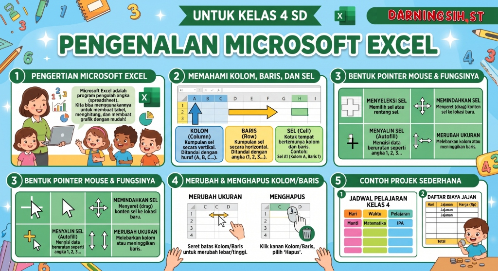
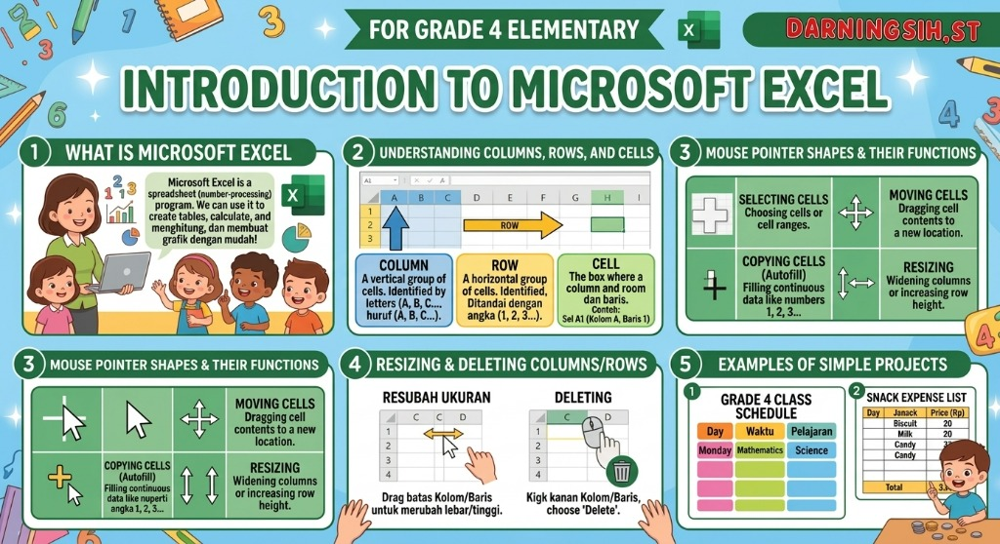

Beranda
Tampilan utama LMS dengan pilihan Semester 1 dan Semester 2.
Belajar dasar coding, logika, dan AI.
Mengembangkan proyek dan kreativitas digital.
Modul Belajar
Gambaran umum semester 1 dan semester 2 berisi konten pembelajaran.
Demo Praktik
Lihat contoh praktik dan hasil karya siswa di setiap semester.
Demo proyek dan praktik pengolah kata & poster.
Demo robotik cilik dan sensor kamera AI.
Petualangan Antariksa EduCode 🚀
Siap Menjelajah Luar Angkasa?
Kendalikan pesawatmu! Gunakan tombol panah ⬅️ ➡️ ⬆️ ⬇️ (atau tombol layar di bawah), tekan Spasi untuk menembakkan laser bintang, tangkap bintang emas ⭐ dan hancurkan meteor!
PROGRAM TAHUNAN (PROTA)
KURIKULUM MERDEKA - SDS CINTA KASIH TZU CHI
| No | Elemen / Capaian Pembelajaran (CP) | Tujuan Pembelajaran (TP) | Alokasi Waktu (JP) | Target |
|---|---|---|---|---|
| SEMESTER 1 (GANJIL) | ||||
| 1 |
Pengolahan Data & Analisis Masalah
Menerapkan berpikir komputasional untuk mengidentifikasi dan memecahkan masalah sederhana dalam kehidupan sehari-hari, serta mengolah data sederhana menggunakan perkakas TIK secara sistematis. |
TP 1.1: Peserta didik dapat mengenali antarmuka dasar Microsoft Excel (cell, row, column) dan mengidentifikasi masalah pencatatan data sederhana dalam kehidupan sehari-hari.
|
4 JP | 100% |
|
TP 1.2: Peserta didik dapat memasukkan, mengelompokkan, dan merapikan format data secara sistematis di Microsoft Excel.
|
6 JP | 100% | ||
|
TP 1.3: Peserta didik dapat menganalisis data sederhana menggunakan fungsi dasar (SUM, AVERAGE, COUNT) untuk menyelesaikan masalah sehari-hari.
|
4 JP | 100% | ||
|
TP 1.4: Peserta didik dapat menyajikan data hasil analisis dalam bentuk grafik/diagram batang sederhana di Microsoft Excel.
|
4 JP | 100% | ||
| 2 |
Memanfaatkan Internet
Menerapkan berpikir komputasional untuk menghasilkan solusi dalam menyelesaikan masalah sehari-hari secara sistematis, serta membandingkan dan mengurutkan objek/langkah-langkah instruksi. |
TP 2.1: Membuat satu konten digital sederhana dalam bentuk teks atau gambar.
|
6 JP | 100% |
|
TP 2.2: Menyusun beberapa konten digital (teks dan gambar) secara terpisah.
|
4 JP | 100% | ||
|
TP 2.3: Mengkombinasikan teks dan gambar secara logis untuk menghasilkan konten digital yang informatif dan menarik.
|
4 JP | 100% | ||
|
TP 2.4: Merancang strategi diseminasi konten digital yang efektif dan mengevaluasi dampaknya terhadap audiens.
|
6 JP | 100% | ||
| Total Alokasi Waktu Semester 1 (Ganjil) : | 38 JP | 100% | ||
Pilih Rangkuman Materi Pembelajaran (TP)
Pilih salah satu dari 8 Tujuan Pembelajaran di bawah untuk membaca materi interaktif & mendengarkan suara narator.
Pengenalan Microsoft Excel / Introduction to Microsoft Excel
Poster Infografis: Pengenalan Microsoft Excel
Karya: DARNINGSIH, ST • Kelas 4 SD (Semester 1)

📊 1. Mengapa Kita Perlu Mengolah Data dengan Komputer?
Bayangkan kamu mencatat uang celengan kelas atau daftar buku pinjaman di kertas buku tulis biasa. Kertas tersebut bisa saja robek, terkena tumpahan air minum, hilang, atau tulisan tangan sulit dibaca teman. Selain itu, jika ada puluhan data uang, menghitungnya secara manual dengan jari sangat rawan salah hitung.
💡 Solusinya: Perkakas TIK seperti Microsoft Excel (Lembar Sebar Digital / Spreadsheet) mencatat data ke dalam baris dan kolom yang rapi, aman tersimpan selamanya, dan dapat menghitung secara otomatis tanpa pernah salah!
🧱 2. Tiga Elemen Utama Antarmuka Microsoft Excel (Wajib Tahu!)
Ketika kamu membuka Microsoft Excel, kamu akan melihat lembar kerja besar yang menyerupai kertas berpetak. Petak-petak tersebut dibentuk oleh 3 unsur dasar:
1. Cell (Sel)
Kotak pertemuan antara Kolom dan Baris. Di dalam sel inilah kita mengetik teks, angka uang, atau rumus. Setiap sel memiliki alamat unik, misalnya sel A1 (Kolom A, Baris 1), B2, atau C5.
2. Row (Baris)
Deretan sel yang membentang secara mendatar (horizontal) dari kiri ke kanan. Baris selalu ditandai dengan deretan angka: 1, 2, 3, 4, 5, dan seterusnya di sisi sebelah kiri layar.
3. Column (Kolom)
Deretan sel yang membentang secara tegak lurus (vertikal) dari atas ke bawah. Kolom selalu ditandai dengan deretan huruf abjad: A, B, C, D, E, dan seterusnya di bagian atas lembar kerja.
🧭 3. Bagian Navigasi Penting Lainnya di Layar Excel
Kotak kecil di kiri atas yang memberitahu sel mana yang sedang kamu klik (misal: tertulis "B3").
Kotak panjang di sebelah Name Box tempat kita melihat, mengetik angka, atau menulis rumus matematika.
Tab di bagian bawah (seperti Sheet1, Sheet2) yang berfungsi seperti halaman lembaran buku.
Pita tombol perintah di bagian atas layar seperti menu Home, Insert, Page Layout, dan Formulas.
🌱 4. Contoh Nyata Sehari-hari & Budi Pekerti Tzu Chi: Celengan Bambu & Bank Sampah
Di SDS Cinta Kasih Tzu Chi, setiap hari siswa diajak berhemat dan menyisihkan koin cinta kasih ke dalam Celengan Bambu serta memilah sampah daur ulang. Bagaimana Excel membantu?
Dibuat kolom: No | Nama Siswa | Tanggal | Jumlah Koin (Rp). Seluruh donasi tercatat transparan dan dapat dijumlahkan otomatis dengan rumus!
Dibuat kolom: No | Jenis Sampah (Botol/Kertas) | Berat (kg). Kita bisa tahu kelas mana yang paling rajin mengumpulkan sampah untuk diselamatkan ke depo daur ulang.
💡 5. Hubungan dengan Berpikir Komputasional (BK)
Ketika menyusun tabel di Excel, kita melatih Dekomposisi (memilah informasi besar menjadi bagian kecil: nama, tanggal, jumlah) dan Abstraksi (hanya mencatat data yang penting tanpa keterangan yang berbelit-belit).
Infographic Poster: Introduction to Microsoft Excel
Created by: DARNINGSIH, ST • Grade 4 Elementary School

📊 1. Why Do We Need Computers to Manage Data?
Imagine writing daily coin savings or library book loans on paper notebooks. Paper records can easily get torn, damaged by water, lost, or difficult to read due to messy handwriting. Moreover, when calculating dozens of numbers with our fingers, human errors frequently happen.
💡 The Solution: Digital ICT tools like Microsoft Excel (Electronic Spreadsheet) organize information into neat rows and columns, calculate totals automatically, and protect data permanently on your computer!
🧱 2. The Three Essential Pillars of Microsoft Excel Interface
When you open Microsoft Excel, you will see a large grid workspace that resembles graphing paper. This grid is built from three fundamental elements:
1. Cell
The rectangular box where a Column and a Row intersect. This is where we type text, numbers, or formulas. Each cell has a unique address coordinate, such as A1 (Column A, Row 1), B2, or C5.
2. Row
A horizontal line of cells running from left to right across the screen. Rows are always identified by numbers: 1, 2, 3, 4, 5 on the far left side of the worksheet.
3. Column
A vertical series of cells running from top to bottom. Columns are always identified by alphabet letters: A, B, C, D, E at the very top of the worksheet grid.
🧭 3. Key Navigation Components on the Excel Screen
The small box on the upper left showing the address of the currently selected active cell (e.g., "B3").
The long horizontal input bar where you enter or review cell content, numbers, and calculation formulas.
The page tab at the bottom (e.g., Sheet1, Sheet2), representing different pages inside one workbook file.
The top strip of command tabs including Home, Insert, Page Layout, and Formulas.
🌱 4. Real-World Applications & Tzu Chi Humanist Values
At SDS Cinta Kasih Tzu Chi, 4th-grade students practice love and mindfulness by collecting kind coins in Bamboo Coin Banks (Celengan Bambu) and sorting recyclables. How does Excel help?
Columns: No | Student Name | Date | Amount (Rp). Transparent, honest, and sums up automatically with zero human math errors!
Columns: No | Item Category (Bottles/Paper) | Weight (kg). We easily discover which class gathers the most recyclables to save Mother Earth.
📖 5. Mini Computer Glossary (English – Indonesian)


Lab Microsoft Word: Rancang Poster Lingkungan Hidup 🌍
Belajar menerapkan Berpikir Komputasional di Microsoft Word! Sisipkan gambar dan teks lingkungan hidup yang sudah disediakan, atur posisinya secara bebas di atas lembar kerja Word, dan cetak karya postermu!
Menu File
Microsoft Word 2026
Belajar Menyimpan & Membuka Dokumen
Simpan Dokumen Poster
Simpan karya poster ke penyimpanan browser atau unduh sebagai file .docx ke komputer agar bisa dibuka dan diedit kembali kapan saja!
Informasi Penyimpanan:
Dokumen akan disimpan dengan seluruh teks, posisi koordinat, dan gambar yang kamu atur sehingga bisa dibuka dan diedit kembali di kemudian hari.
Unduh File Dokumen (.docx)
Unduh dokumen poster ke dalam penyimpanan komputer dengan format Word (.docx) asli. File ini bisa kamu simpan di harddisk/flashdisk dan dibuka kembali!
File Dokumen Word (.docx)
Format Microsoft Word asli yang menyimpan judul, slogan, koordinat posisi, dan gambar untuk diedit kembali.
Buka Dokumen yang Pernah Disimpan
Buka kembali dokumen poster Word (.docx) yang pernah kamu simpan di komputer untuk melanjutkan pengeditan.
Punya file dokumen .docx yang tersimpan di komputermu? Klik tombol untuk membukanya ke lembar kerja:
Buat Dokumen Poster Baru
Mulai membuat karya poster baru dari lembar kosong atau gunakan template.
7 Kebiasaan Anak Indonesia Hebat
Klik untuk taruhPilih judul WordArt, butir 7 kebiasaan pembiasaan karakter, atau pesan Asta Cita:
Bank Gambar & Ikon Karakter
Klik untuk taruhPilih ikon visual 7 kebiasaan atau ambil gambar hasil download dari komputer:
Punya gambar infografis atau foto hasil download? Klik tombol untuk menaruhnya ke lembar Word:
Lembar Kerja Microsoft Word Siap Digunakan
Klik teks atau gambar dari Bank Bahan di sebelah kiri untuk menaruh konten di lembar dokumen ini!
Poster Lingkungan Hidup Memenuhi Syarat Logis! 🎉
Poster memiliki judul yang jelas, gambar lingkungan hidup yang relevan, dan pesan ajakan yang informatif.
Laboratorium Pengolah Angka & Grafik Pintar! 📊
Belajar menyusun tabel rapi, mewarnai sel, memformat mata uang (Rp), dan melakukan perhitungan kilat otomatis dengan rumus AutoSum (=SUM, =AVERAGE, =MAX, =MIN). Saksikan grafik batang langsung bergerak otomatis mengikuti angka yang kamu ubah!
1. Pengolahan Data & Analisis Masalah 📈
Capaian Pembelajaran: Menerapkan berpikir komputasional untuk mengidentifikasi dan memecahkan masalah sederhana dalam kehidupan sehari-hari, serta mengolah data sederhana menggunakan perkakas TIK secara sistematis.
Pilih Lembar Latihan & Template Data Siswa:
Klik salah satu template di bawah untuk memuat tabel dan rumus otomatis yang siap kamu pelajari!
Diagram Batang Dinamis
Live Update ⚡Grafik ini membaca otomatis baris/kolom dari tabel spreadsheet kamu. Coba ubah angka di tabel, grafiknya akan langsung menyesuaikan!
Antarmuka & Masalah Data
Mengenal Cell (sel), Row (baris), Column (kolom), dan memecahkan masalah pencatatan kertas yang mudah hilang dengan lembar kerja Excel digital.
Format & Kelompok Data
Memasukkan teks/angka, mengelompokkan dengan warna latar sel, memasang All Borders, serta memformat mata uang Rupiah (Rp) secara rapi.
Analisis Rumus Fungsi Dasar
Menyelesaikan masalah hitungan harian secara kilat dengan rumus: =SUM(...) (total), =AVERAGE(...) (rata-rata), dan =COUNT(...) (jumlah data).
Penyajian Diagram Batang
Menyajikan data hasil analisis ke bentuk diagram batang visual yang menarik, informatif, dan bergerak otomatis ketika angka diubah.
Panggung Eksperimen Pembelajaran
Lihat bagaimana teori bekerja secara visual dan interaktif dengan simulator di bawah ini!
1 Demonstrasi Kekuatan Konten Digital Tunggal (TP 2.1)
Bandingkan bagaimana sebuah pesan tersampaikan ketika hanya berupa teks murni, atau hanya gambar simbolis. Keduanya punya kekuatan masing-masing!
Pilih Contoh Slogan Edukasi:
"Buku Adalah Jendela Dunia. Ayo Membaca!"
Pilih Ilustrasi Simbolis:
Praktik Mandiri & Eksplorasi
Pilih praktik untuk mencoba langsung membuat konten, memilah elemen, menyusun poster, dan mendiseminasikan!
Praktik 1: Membuat Satu Konten Digital Sederhana (TP 2.1)
Pilih salah satu: lihat & kelola Hasil Karya Poster (Ms. Word) yang telah kamu simpan, atau buka Aplikasi Paint Terbaru untuk menggambar!
Galeri & Lemari Penyimpanan Poster Microsoft Word
Setiap poster yang dibuat dan disimpan di Lab Ms. Word otomatis tersimpan dan dipajang di sini sebagai bukti karya praktikum digitalmu!
Gunakan kuas, pensil, bentuk, atau warna untuk menggambar. Klik "Simpan Gambar (.PNG)" untuk mengunduhnya ke laptop/komputer!
Kuis Petualangan Kreator Cilik
Jawab 5 pertanyaan kuis dari materi TP 2.1 sampai TP 2.4 untuk mendapatkan Sertifikat Digital!
Sedang memuat pertanyaan...
KREATOR KONTEN DIGITAL CILIK
Diberikan kepada siswa berprestasi:
(Kamu bisa mengganti nama di atas dengan namamu sendiri)
Telah berhasil menguasai materi Memanfaatkan Internet & Berpikir Komputasional (TP 2.1 - TP 2.4) Kelas 4 SD Semester 1 dengan predikat: